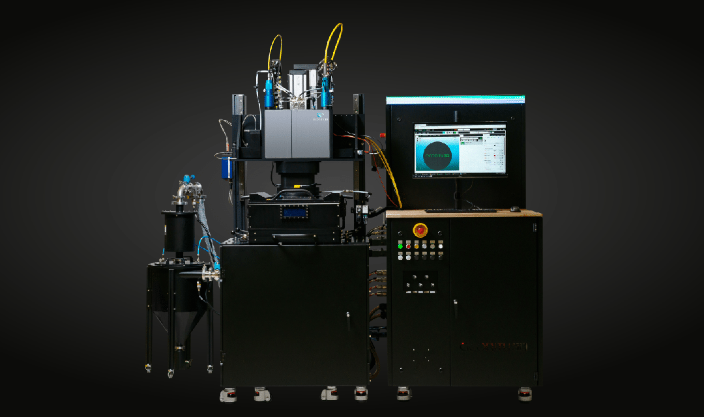

<div class="equip-card flip status-notconnected">
  <div class="inner">

    <!-- FRONT -->
    <div class="equip-front equip-face">
      
      <div class="name-ribbon">Aconity Midi</div>
      <div class="equip-badge">Not Connected</div>
    </div>

    <!-- BACK -->
    <div class="equip-back equip-face">
      <div>
        <p class="equip-title">Aconity Midi</p>

        <p class="equip-meta">
          <b>Adapter:</b> OPC-UA<br>
          Data collection options:
          <ul>
            <li>Files</li>
            <li>Time-Series</li>
          </ul>
          <br>
          Owner: (name)
        </p>
      </div>

      <div class="equip-badge">Not Connected</div>
    </div>

  </div>
</div>